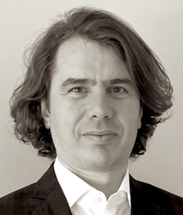

![The quantum computer disruption is an opportunity, but also a threat to cybersecurity. Quantum computer will be able to break in few minutes the public key crypto-systems that secure Internet networks (https, IPSec VPN), mobile messaging apps (Signal, WhatsApp…), digital signature protocols, blockchain applications, etc… A practical approach against this threat is to build quantum-resistant public key crypto-systems.
CryptoNext Security is a spin-off of INRIA Paris, Sorbonne University and CNRS, founded in 2019 by Jean-Charles Faugère and Ludovic Perret, well-known researchers with over 15 years of experience in post quantum cryptography. As a software company CryptoNext Security’s mission is to support private and public organizations to smoothly manage the quantum threat with its quantum safe solutions.
CryptoNext already offers « combat proven », quantum resistant, hybrid, and crypto-agile solutions for various industries (defense, finance, infrastructure…) and technologies (HSM, VPN, PKI, IoT, blockchains, communication app, business softwares…) in order to migrate IT infrastructures and products to quantum resistant level.](about-us_fichiers/image002.png)

![Jean-Charles Faugère is the co-founder and Chief Technical Officer of CryptoNext. Jean-Charles Faugère is a pioneer in the area of quantum-safe cryptography. Jean-Charles is well known for having developed efficient algorithms and high-performance software that permit to assess the security of a large variety of quantum-safe cryptosystems. Jean-Charles is the co-author of several submissions to the on-going NIST post-quantum standardization process.
Jean-Charles was research director at INRIA and leader of a joint team between INRIA Paris and Sorbonne University. He has been awarded by the Seymour Cray prize for a contribution to high-performance software and the Atos & Joseph Fourier prize in the area of quantum technologies for his contributions to quantum-safe cryptography.
Jean-Charles Faugère is a former student of École Normale Supérieure Ulm (mathematics)](about-us_fichiers/image011.png)
![Florent Grosmaitre joined CryptoNext Security as Chief Executive Officer in 2021 to complete the co-founders team.
Florent has more than 15 years of entrepreneurial experience ; he founded and managed several startups and SMEs in France, Europe and Russia, especially in the Software industry.
Before joining CryptoNext Security, Florent was in charge of piloting the company Actibase, specialized in software for medical imaging platforms and sold it in 2020 to a European leader. Florent brings its experience to structure the growth of CryptoNext Security from a seed startup to a scale-up.
Florent is graduate of the Ecole Nationale d’Arts et Métiers engineering school and of the HEC Entrepreneur Master.](about-us_fichiers/image012.png)
![Christian d’Orival joined CryptoNext Security as Chief Revenue Officer in 2022 with responsibilities encompassing company’s Sales and Marketing.
He brings more than 30 years of executive, business development and revenue operations management experience to the team with prior roles including President & CEO at Luceor, COO at DenyAll (Rhode & Schwarz Cybersecurity), SEMEA Enterprise Sales Managing Director at Juniper Networks and SVP Sales, Marketing & Services at OST (acquired by Newbridge). Christian has also been instrumental to the EMEA setup and sales development for several US based companies such as Peribit Networks, Aspect Communications or SGI.
Christian is graduate of engineering from Institut Supérieur d’Electronique de Paris.](about-us_fichiers/image013.png)